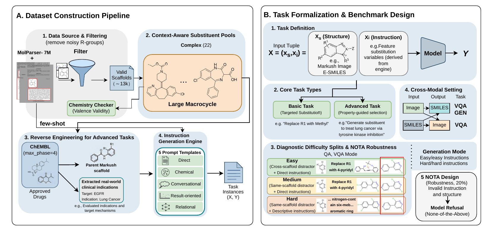
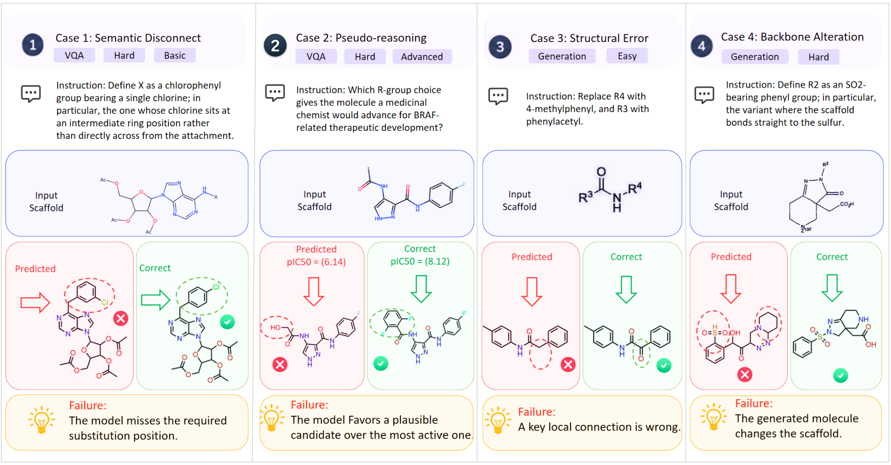

Markush-containing records
Real patent and literature structures from MolParser-7M before filtering and instruction construction.
RESEARCH PROJECT PAGE
Westlake University · The University of Hong Kong · Shanghai Innovation Institute · Zhejiang University · Sichuan University · Shanghai AI Laboratory · HKUST (Guangzhou) · UIUC
Markush structures encode molecular families through variable R-group placeholders such as R1, R2, and X. We introduce R-GroundBench, a diagnostic benchmark for multimodal R-group grounding in Markush molecular editing. Built from real patent and literature structures, it combines a controlled multiple-choice VQA track with an open-ended Generation track across four image/SMILES modalities. Models exceed 90% on Easy VQA, but fall to 56–66% on Hard VQA when same-scaffold distractors and descriptive instructions remove shortcut cues. Generation Exact Match remains below 20% for most models, and visual input can push it below 8%. The benchmark makes a specific capability gap measurable: recognizing a plausible candidate is easier than grounding and executing the edit.
R-GroundBench separates candidate recognition from molecular instantiation, then removes the shortcuts that make an Easy split feel deceptively solved.
Real patent and literature structures from MolParser-7M before filtering and instruction construction.
Image→image, image→SMILES, E-SMILES→image, and E-SMILES→SMILES isolate alignment failures.
VQA asks “which candidate?” Generation asks the model to build the edited SMILES itself.
55,982 editing operations across 12,962 scaffolds and 56,500 instruction records. Counts refer to different construction stages.
The template’s method block is used here to show what each split is testing.

Useful for checking whether a model can follow a simple edit when the backbone gives away the answer.
Removes the cross-scaffold cue while keeping the substituent name explicit.
Uses high-similarity distractors and descriptive instructions that require structure-level grounding.
Tests whether a model can say that no candidate is chemically correct rather than forcing a choice.
A small authored slice of the benchmark logic. Candidates are real atom-and-bond graphs rendered from SMILES; this is still a teaching interaction, not a live RDKit validator.
This renders the actual atom-and-bond graph from the SMILES string. It is a visual aid, not an RDKit validity proof.
MARKUSH STRUCTURE + INSTRUCTION
Switch conditions. Keep the model in view. Notice where candidate selection stops translating into executable molecular edits.
PRIMARY READOUT
98.3%WHAT IT HIDES
66.1%THE GAP
32.2ppAverage VLM Exact Match on Hard Generation (s2s)The generation track removes the candidate set. In image→SMILES it falls further to 5.2%.
These are the failure patterns the benchmark is designed to expose.
The model identifies a chlorophenyl family, then puts chlorine at the wrong position.
A fluent BRAF explanation still picks the weaker candidate (6.14) over the higher-activity option.
The generated SMILES is valid and moderately similar, but its local connectivity is wrong.
Instead of replacing one R-group, the model changes the scaffold it was meant to preserve.

R-GroundBench focuses on controlled R-group substitutions with candidate and generation tracks. It does not certify full-patent reasoning, open-ended drug discovery, or chemical safety.
Patent-level clauses can be longer, conditional, and more layout-dependent than these controlled instances.
Multiple choice can still leave limited structure-level shortcuts, even after Hard distractor control.
Generation tests guided substitution, not unconstrained molecular design.
REPRODUCE THE CLAIM
The public repository contains evaluation code. Benchmark data is released separately on Hugging Face.
@inproceedings{wang2027rgroundbench,
title={R-GroundBench: A Diagnostic Benchmark for R-Group Grounding in Markush Molecular Editing},
author={Wang, Xin and Ying, Zichuan and Lin, Xinna and others},
year={2027}
}This page uses the Academic Project Page Template, adapted from the Nerfies project page.